2026年5月29日 Hong Kong General Chamber of Commerce
HKGCC 165th Anniversary Ball｜香港總商會165周年晚宴
Specialty display / Visual engineering
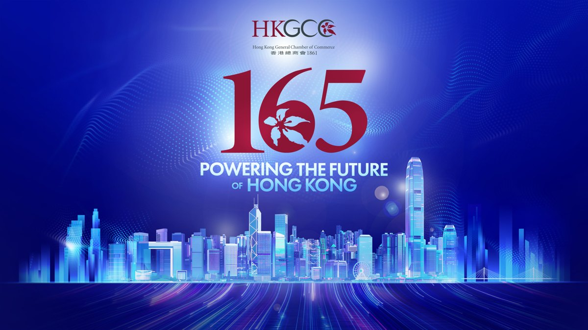
2025年12月15日 Belt and Road General Chamber of Commerce; Commissioner's Office of China's Foreign Ministry in HKSAR; Hong Kong Chinese Enterprises Association
第四屆「一帶一路」青年發展高峰論壇
Event organizing / Audio / visual engineering
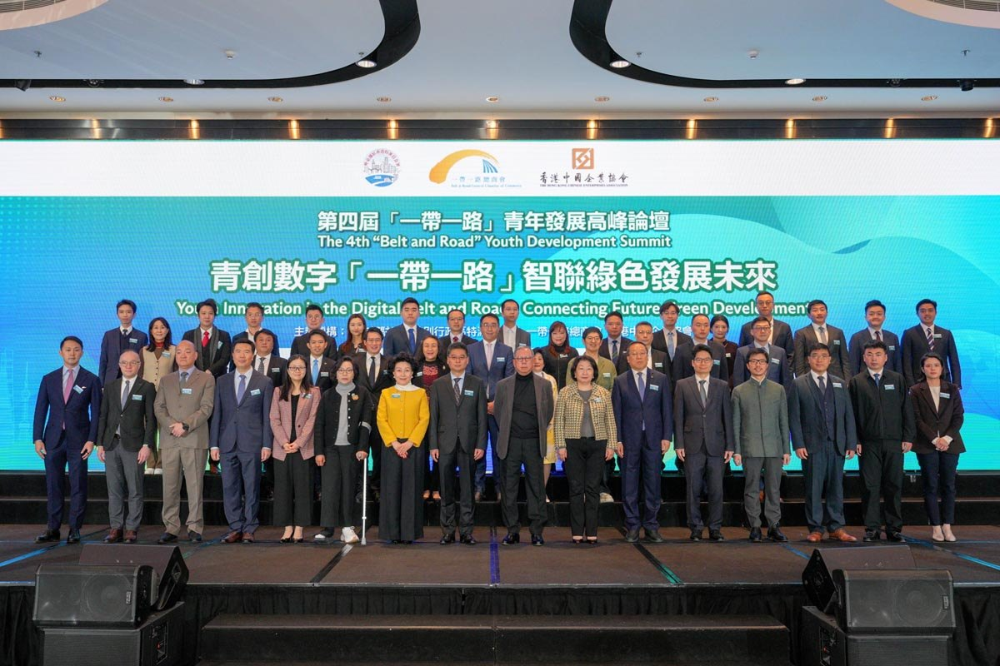
2025年9月5日 Belt and Road General Chamber of Commerce
「100個香港一帶一路故事網上巡禮」啟動儀式
Audio / visual engineering / Streaming
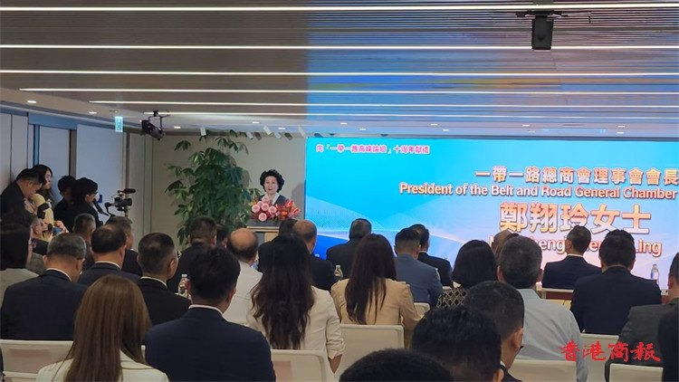
2025年5月25日 Virtual Carnival organizing team
Virtual Carnival 2025
Event organizing / Audio / visual engineering / Remote production
2024年12月21日 UNDONE; hololive English / COVER Corporation
hololive English Party2Gether
Audio / visual engineering / Streaming
2024年12月2日 Commissioner's Office of China's Foreign Ministry in HKSAR; Belt and Road General Chamber of Commerce; Hong Kong United Youth Association
第三屆「一帶一路」青年發展高峰論壇
Event organizing / Audio / visual engineering
2024年12月2日 Commissioner's Office of China's Foreign Ministry in HKSAR; Belt and Road General Chamber of Commerce
「『帶路』文化聚香江」文化晚宴
Event organizing / Audio / visual engineering
2024年11月15-17日 Hong Kong Guangxi Association; Hong Kong Guangxi Kowloon East Service Center (co-organizers)
Top Nova Music Festival 2024｜Top Nova 音樂節
Event organizing / Audio / visual engineering
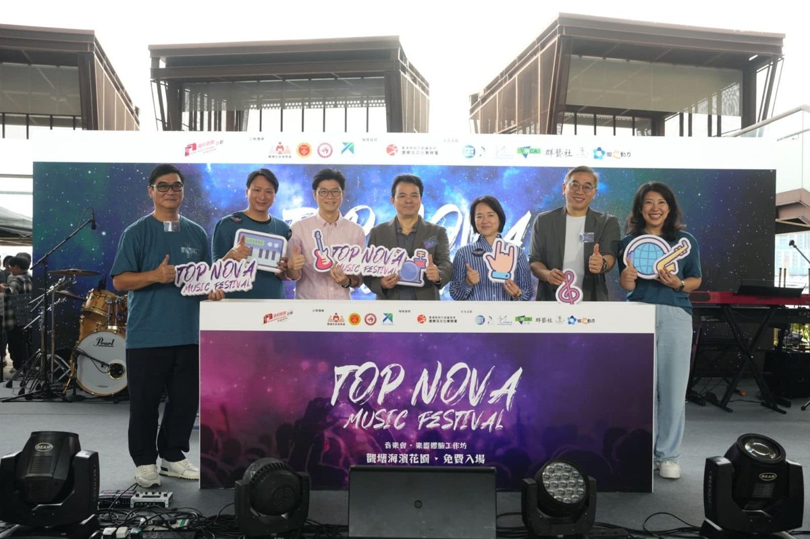
2023年11月25日 Imagine Division; innoneer.TV; Mic On Project
Mic On Project 1st Live Concert
Audio / visual engineering / Streaming
2023年7月7-9日 Hong Kong Guangxi Overseas Chinese Association; Kwun Tong District Office (co-organizer); Imagine Division (production)
Top Nova Music Festival 2023｜Top Nova 音樂節
Event organizing / Audio / visual engineering
2022年12月2日 Hong Kong Productivity Council
HKPC ForeSight 2023 — 智瞻2023：經濟開新篇・科技創優勢
Audio / visual engineering / Streaming
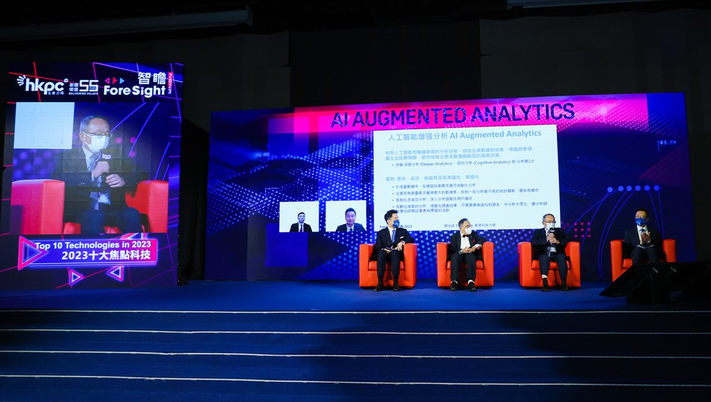
2022年8月27-28日 Luminous Lodge organizing committee
Luminous Lodge 01 綜合同人展
Event organizing / Show direction / Audio / visual engineering
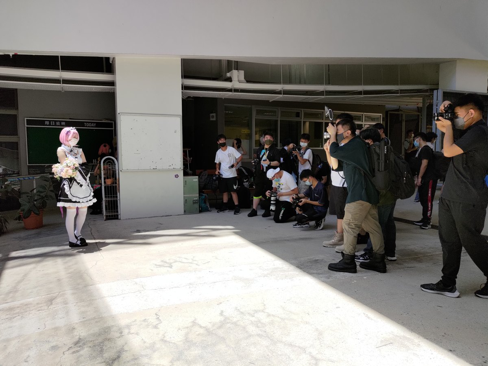
2022年8月25日 Guangdong Provincial TCM Bureau; HKSAR Health Bureau; Macao Health Bureau; Zhongshan Municipal Government
第四屆粵港澳大灣區中醫藥傳承創新發展大會
Visual engineering / Streaming
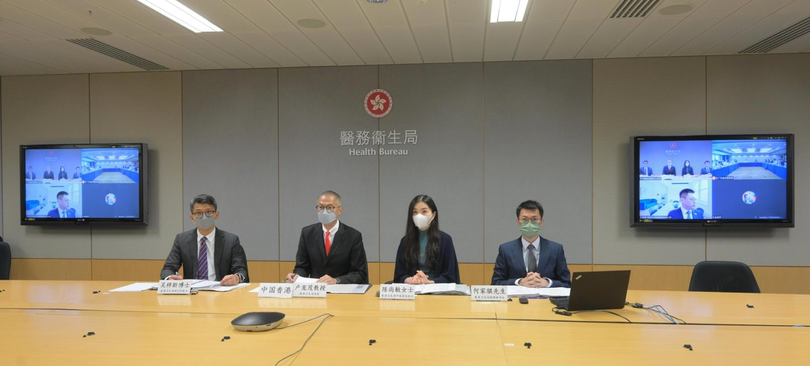
2022年8月24-25日 Revive Tech Asia Limited
Revive Tech Asia 2022 亞洲商業科技展
Audio / visual engineering / Streaming
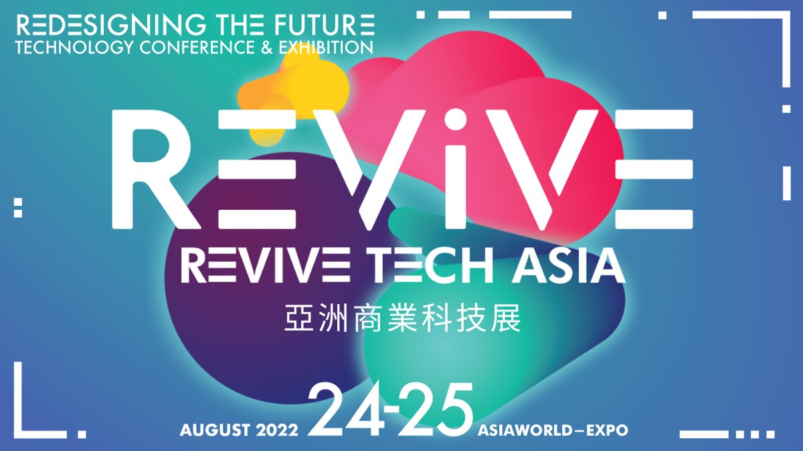
2022年8月16日 Department of Health
香港中藥材標準國際專家委員會第12次會議
Visual engineering / Streaming
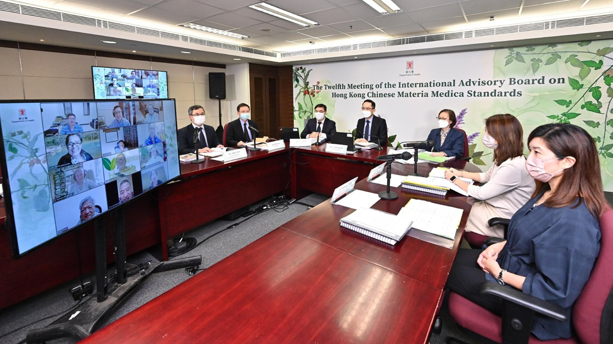
2022年7月29日 UNICEF Hong Kong; Department of Health; Baby Friendly Hospital Initiative Hong Kong Association; Hospital Authority
國際母乳哺育周2022線上慶祝活動
Visual engineering / Streaming
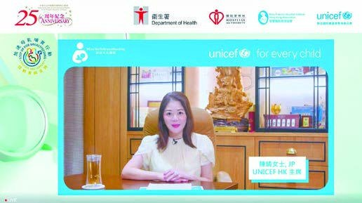
2022年6月21日 Friends of Hong Kong Association
慶祝香港回歸祖國25週年暨香港友好協進會成立33週年音樂晚會
Streaming engineering
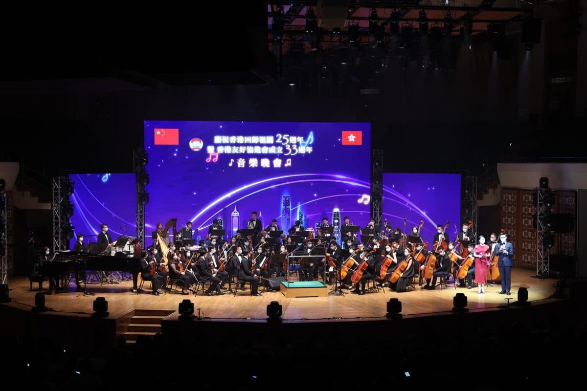
2022年6月2日 HKSAR Government — Food and Health Bureau; Department of Health
中醫醫院及政府中藥檢測中心動土典禮
Visual engineering / Streaming
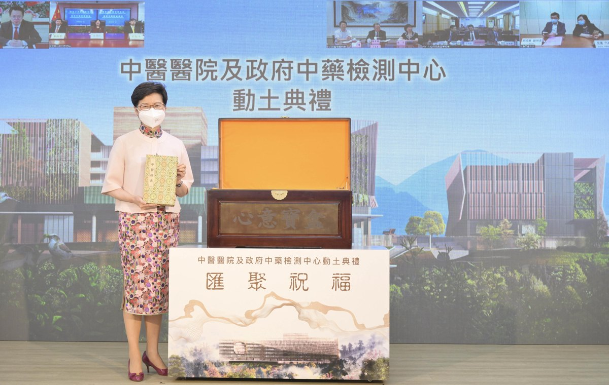
2022年5月25日 Innovation and Technology Commission
InnoHK 創新香港研發平台啟動禮
Visual engineering / Streaming
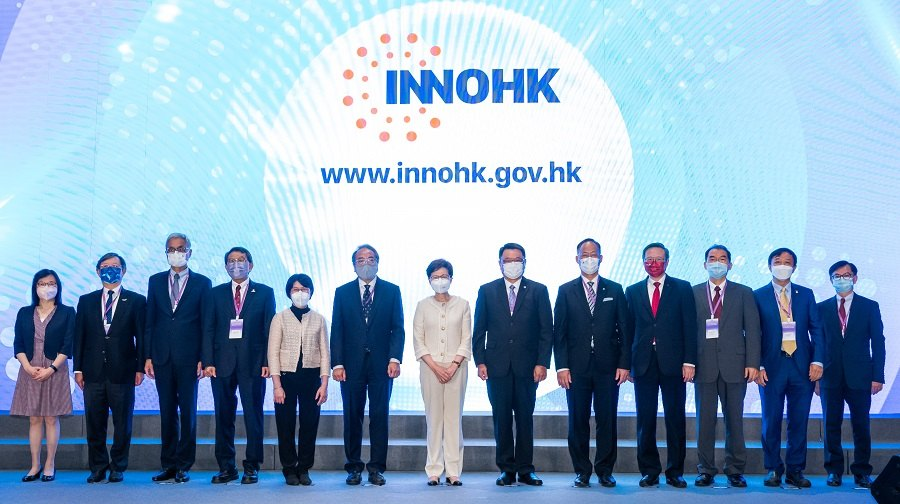
2019年7月26-28日 Hong Kong Tourism Board; presented by Cyberport
e-Sports & Music Festival Hong Kong 2019
Stage / tournament outside broadcast / Streaming
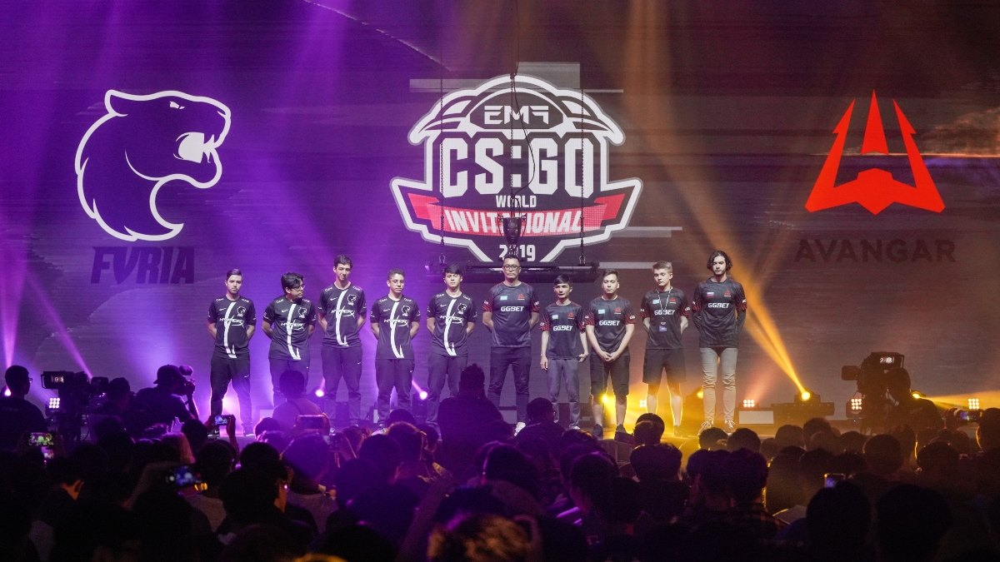